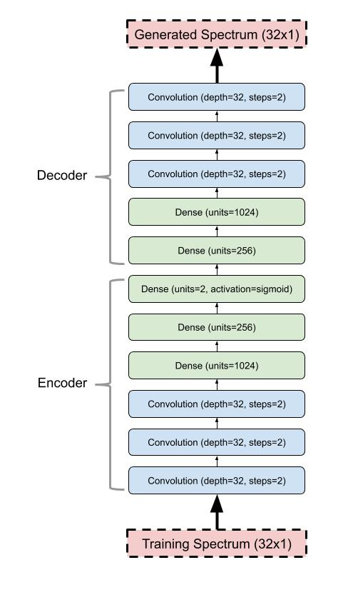

Below is a 2-valued (XY) compressed latent space (controlled by XY sliders) of the spectral and pitch features of David Attenborough's voice.
A custom-built vocoder is being used to generate what sounds like some strange vocal sounds. The vocoder filters' filter amplitudes are being directly controlled by the output from a deep model, trained on voice data. In addition, a square-wave oscillator is having its pitch controlled, to mimic the types of pitches heard in a voice.
To ensure that it would (kind of) work in the end, all training data was likewise generated by passing an audio sample through that same custom vocoder, and saving the detected frequency amplitudes.
Here is a link to the python notebook used to train autoencoder, and below is a drawing of the autoencoder's structure:

I wanted to make a deep model that learned the spectral shapes, and pitches, generated from a voice. Then, I thought, it would be fun to manipulate and explore that compressed latent space it in real-time.
I imagined it would be like I was taking the original speaker's mouth and vocal chords, and bending them around to make strange through noises (I have a history of liking throat noises).
Here is a sample from the original audio recording I used to train from:
While there are ML modelling techniques that can both learn and generate auditory features (from/to spectral information), I could not find any way to do this in "real-time".
The thing is, real-time is important to me, because at it's core I wanted to make an iteractive tool.
An example of non-real-time speec synthesis includes implementations of the Tacotron-2, which uses spectral information (mel-spectrograms), to train a wavenet and text-to-speech. The Tacotron-2, however, is far from real-time, and requires a bit of time to generate the audio.
While a vocoder might sound a tad too robotic, the amount of information required to make something sound close enough to a voice is far less than other methods.
So, I built a vocoder using ToneJS, which can both handle an MP3 file as the modulating source, as well as a TFJS model to control the filters' amplitudes and oscillator pitch.
Click the button below to hear the original MP3 file (from above), being filtered through the vocoder. Sounds pretty robotic, eh?
While I was able to make something that sounds throat-ish, my final model does not contain the level of spectral detail I would have wanted. It sounds mostly like gutteral whispering most of the time...
Some places for improvement are: